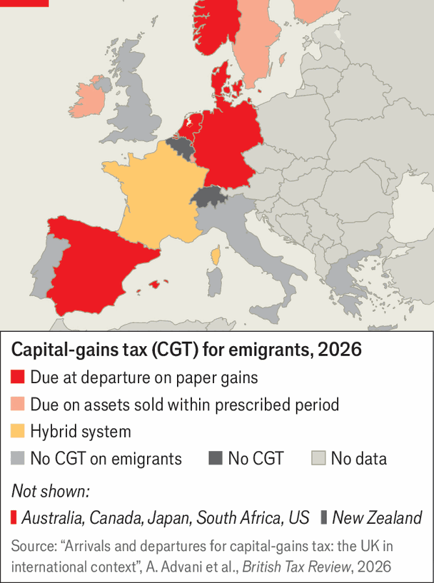

Italy’s proposed exit tax causes ructions
Taxing rich emigrants’ capital gains may be good in theory. Practice is harder
Nov 12th 2026
Only a few days after Giorgia Meloni, Italy’s prime minister, said her draft budget bill for next year would contain an “exit tax” on wealthy emigrants’ capital gains, she was back-pedalling. On November 5th her deputy economy minister, Maurizio Leo, said the government was “open to changes”. From tax lawyers to politicians, critics have been vocal. They include Matteo Renzi, who as prime minister proposed a flat tax of €100,000 ($111,000) on rich immigrants’ income from abroad. Introduced in 2017, it has been credited with making Italy attractive to foreign professionals. A populist measure, he says, will waste a decade of work.
In principle an exit tax has something to be said for it. It removes the incentive to move abroad to dodge capital-gains tax on, say, shares or bonds that have risen in value. Several countries have adopted such taxes (see map). Under Italy’s draft law, which is subject to a vote next month, residents with more than €800,000 of financial holdings worldwide who leave the country will pay a 26% capital-gains tax, regardless of whether they sell their stash. It covers gross financial assets (ie, before liabilities or debts), including derivatives and crypto assets as well as equities and bonds—a broader base than in other countries. Anyone resident for six out of the ten tax years before leaving Italy will be liable.

But the tax has its flaws. Gains are to be calculated from the purchase price of assets, even if they were bought before someone arrived in Italy. Emigrants might also grumble about getting a bill for unrealised gains, although if they move to another European Union country and hold on to their nest-eggs they will be reimbursed after five years. Tracking those liable and calculating what is due may also be fiddly. And the Italian government will reap little: it expects merely €3.4m next year, €6.7m in each of the following four and €3.4m a year from then on.
Government insiders say that besides courting voters before next year’s parliamentary election, Ms Meloni has acted in the belief that Britain would introduce an exit tax, leaving Italy as the only G7 country without one. That fear seems misplaced. Last year Rachel Reeves, then Britain’s chancellor, pondered a 20% charge on unrealised capital gains on emigrants’ business assets. But she ditched the idea after warnings that it would prompt rich folk to move to places with no such levy—such as Italy.
In 2022 Germany switched to a system that, like Ms Meloni’s proposal, taxes gains on the paper value of emigrants’ assets. Hitherto tax had been due only if assets were sold within ten years. Ulrich Stoll, who heads the Stiftung Familienunternehmen, a lobby group for family companies, argues that the new set-up inhibits entrepreneurs’ mobility. Mr Stoll, who also owns one-sixth of Festo, a 101-year-old engineering firm, says that under the new regime it would have been prohibitively costly to work in America for six years, a spell that proved useful for his career.
A well-designed tax might allay such concerns. Christian Kempges, a lawyer at Baker Tilly, a consulting firm, says he can think of no country that has got exit taxes right. He suggests they should kick in only if an asset is sold, but with no time limit—and that the OECD should devise a rule to apply to all its members. Ms Meloni may be pushed into changing her plan. But her worry is losing votes, not losing the rich. ■